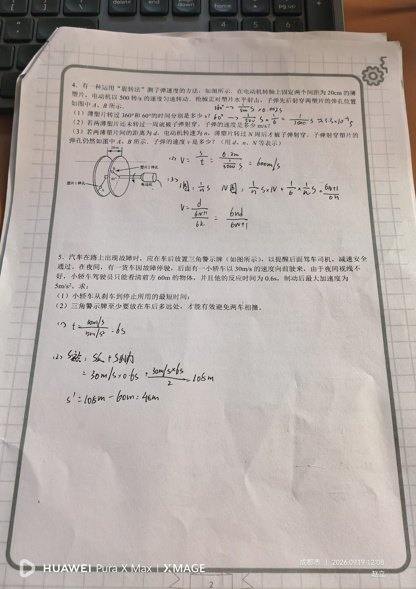

① 两薄塑片间距 20 cm = 0.2 m； ② 电动机转速 n = 500 转/s（匀速转动）； ③ 子弹水平射穿两片，两弹孔对应圆心角 60°； ④ 第(3)问：间距 d、转速 n、转过 N 周后射穿。
(1) 塑片转 360°、60° 各用多少时间（用 n 表示）？ (2) 未满一周即射穿时子弹速度？ (3) 转过 N 周后才射穿时子弹速度表达式？
核心思想：子弹在两片之间飞行的时间 = 塑片转过相应角度所用的时间（时间相等）。 (1) 转一周用时 T = 1/n；转 60° 是 1/6 周 ⇒ 用时 = 1/(6n)。 代入 n = 500：T = 0.002 s，60° 用时 = 1/3000 s。 (2) 子弹飞行时间 = 塑片转 60° 的时间 = 1/3000 s； v = d ÷ t = 0.2 m ÷ (1/3000) s = 600 m/s。 (3) 塑片先转 N 整周，再转 60°：t = N/n + 1/(6n) = (6N + 1)/(6n)； v = d ÷ t = d × 6n ÷ (6N + 1) = 6nd/(6N+1)。
① 第(3)问符号混淆：把"N 周"写成 n，写出 6nd/(6n+1)（这是本次作业的错点）； ② 忘记 60° = 1/6 转，直接写成 1/n； ③ 单位不统一：20 cm 忘记换成 0.2 m； ④ 不理解"时间相等"这个桥梁，试图分别算子弹和塑片的时间。
转速与周期：T = 1/n； 匀速圆周运动的角度—时间关系（角度 ÷ 360° = 时间 ÷ 周期）； 匀速直线运动 v = s/t； "同步计时"思想：把两个物体的运动时间关联起来（这是本题的关键建模）。